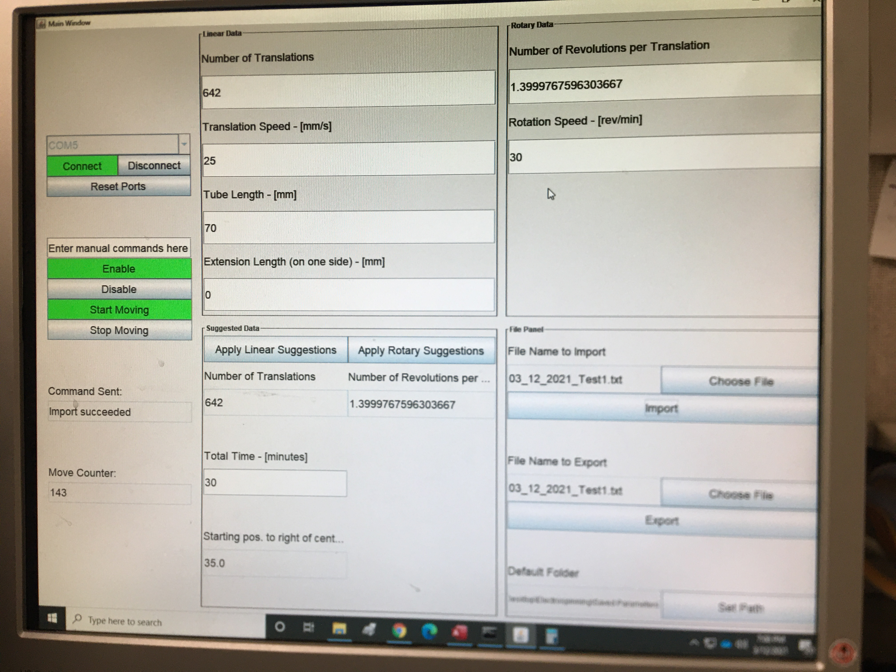
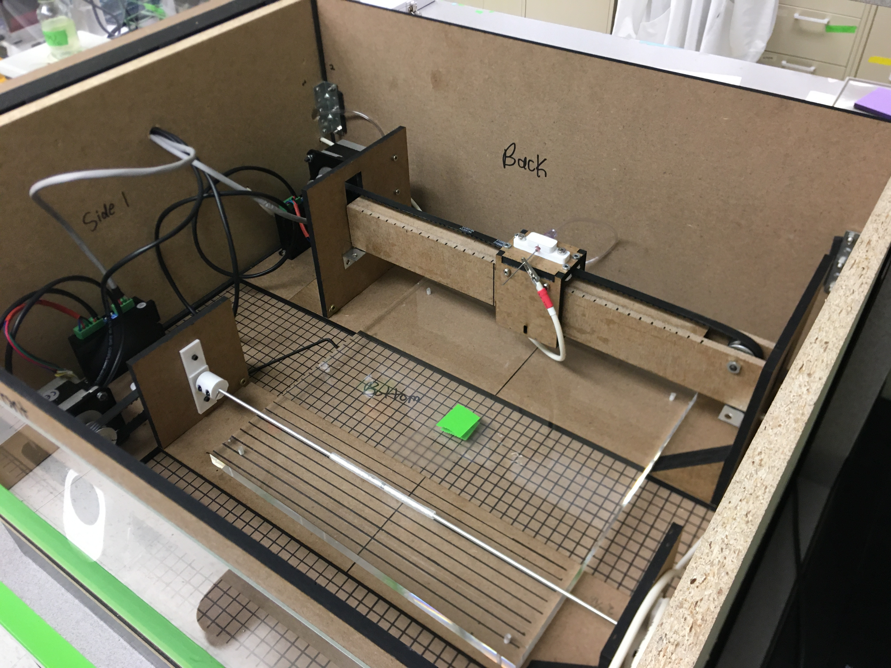
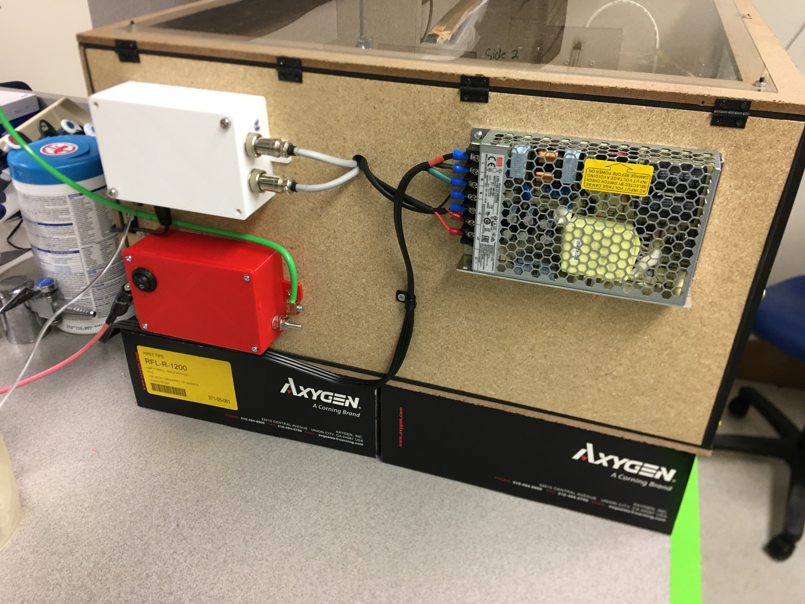
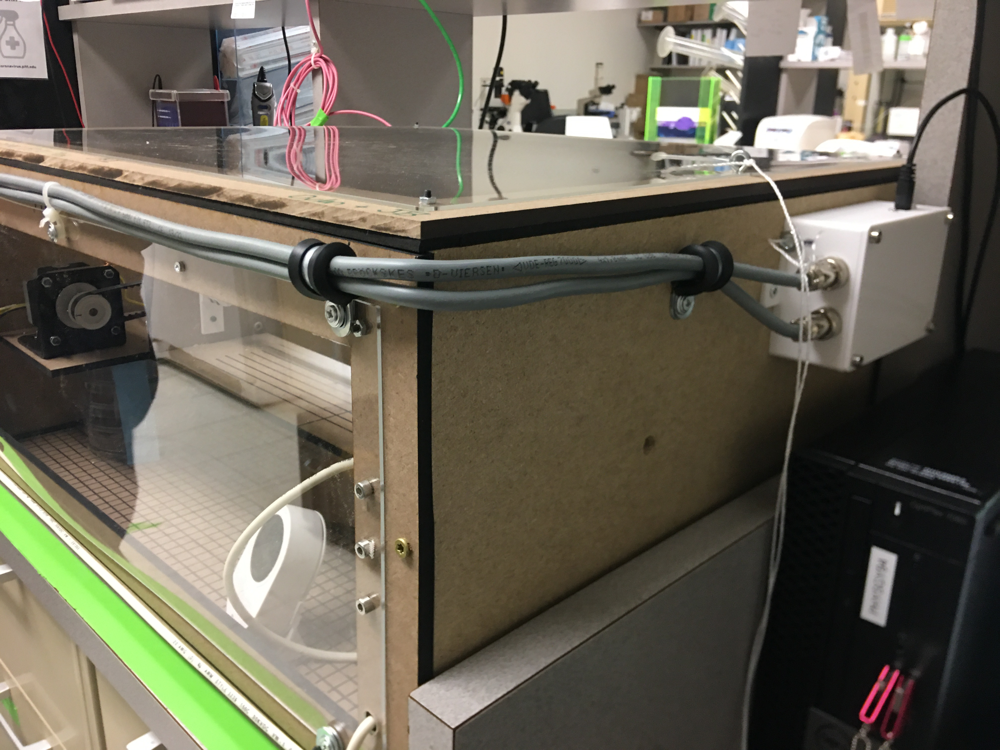
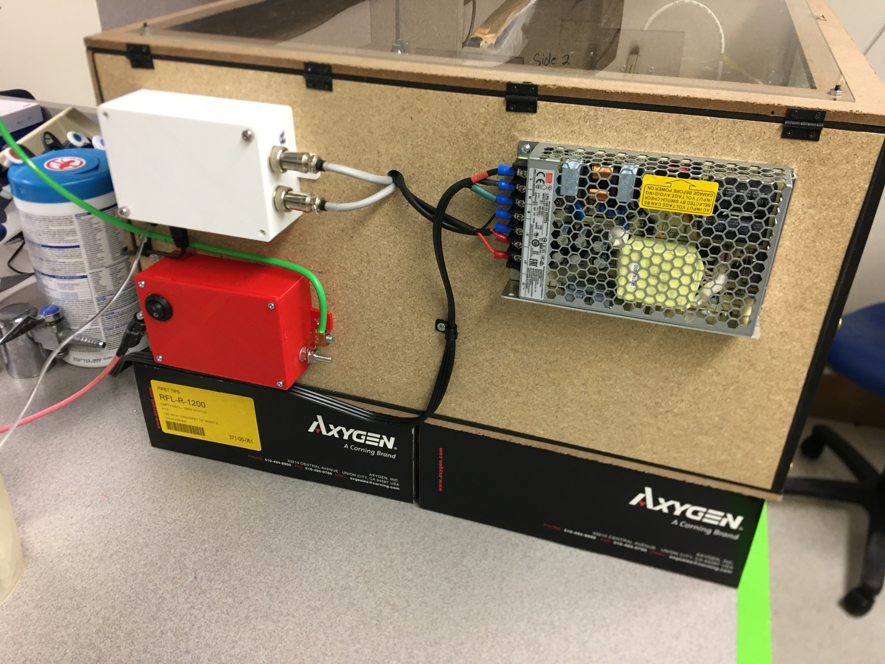
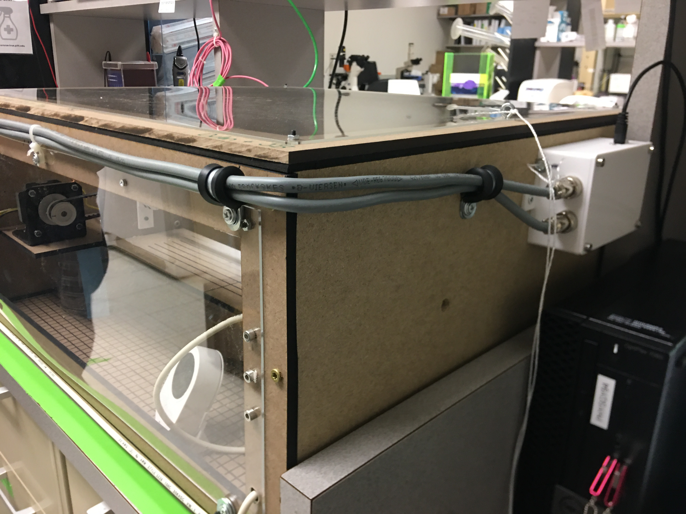
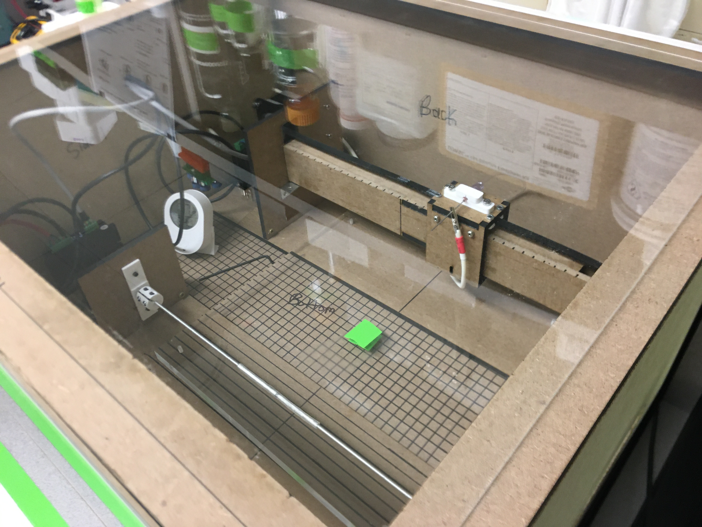
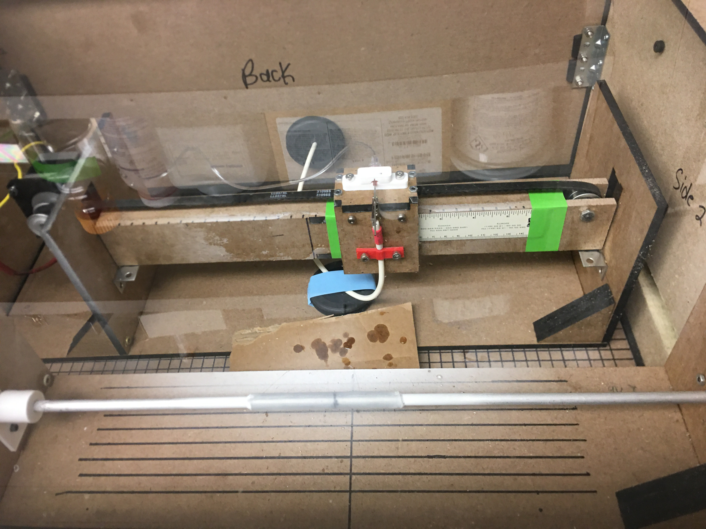

Automated Electrospinning Machine
This project was done in conjunction with Dr. JB Moses, a general surgery resident at UMPC. I was tasked by Dr. Moses with creating an electrospinning apparatus to assist the research being done on vascular grafts. Check out a short clip (Chapter 3) from UPMC on the research being done by Dr. Moses and his colleagues, including some details on the electrospinning machine.
This project had many specifications, specifically, we needed to use a minimal amount of metal parts in the construction of the linear axis, rotary axis, and enclosure. Electrospinning involves very high DC voltage, around 15kV to operate properly. Any exposed metal parts near the high voltage connections would lead to serious concerns of arcing. It should be noted that the current draw in this electrospinning setup is only a few microamps stemming from the movement of charged polymer particles from the needle to the rotating collector.
Another portion of the project involved biasing the collector (rotating aluminum mandrel in the pictures) with a moderate negative voltage. This was done to improve the electrospinning process and the deposition of the polymer fibers. Overall, the voltage difference between the needle and collector was about 20kV, which seemed to work well in our testing.
I also created a GUI to enter the graft tubing dimensions and set the speed parameters for both axes. The GUI handles the synchronization of the linear and rotary motion as well. All of this was done in Java, which connects to an Arduino Nano Every driving the stepper motors and drivers. I learned a lot from this project, and was grateful for the experience in a medical setting working with high voltage electronics and motion control systems.
Photo Gallery


 




